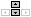

Le musee de CDE est un jeu vidéo. Vous vous y baladez de salle en salle comme dans un musée ordinaire. Un guide, très aimable, dit quelque chose à chaque fois qu'il se trouve devant une CDE ou une porte. Tout ce qu'il dit est affiché dans un cadre en haut à gauche du cadre du jeu.
Pour vous déplacer, vous devez uttiliser les touches fléchées DROITE et GAUCHE de votre clavier
Certaines CDE seront sûrement trop grande pour s'afficher en entier dans votre fênêtre. Pour regarder en l'air, vous pouvez uttiliser la touche flêchée HAUT de votre clavier, Il vous faudra ensuite uttiliser la touche flêchée BAS pour redescendre
+Si vous passez devant une porte, rien ne se passera. Par contre, si en même temps que vous marchez devant la porte vous maintenez la BARRE D'ÉSPACE enfoncée, vous y entrez et pourrez ainsi visiter une nouvelle salle du musée.
+Si vous trouvez que le guide marche trop lentement, il vous suffit de maintenir la touche SHIFT (ou touche majuscule) enfoncée pour accélerer la cadence
Si vous voyez un astérisque lors de la lecture d'un paragraphe, vous pouvez appuyez sur ALT pour lire la glose à laquelle il renvoie